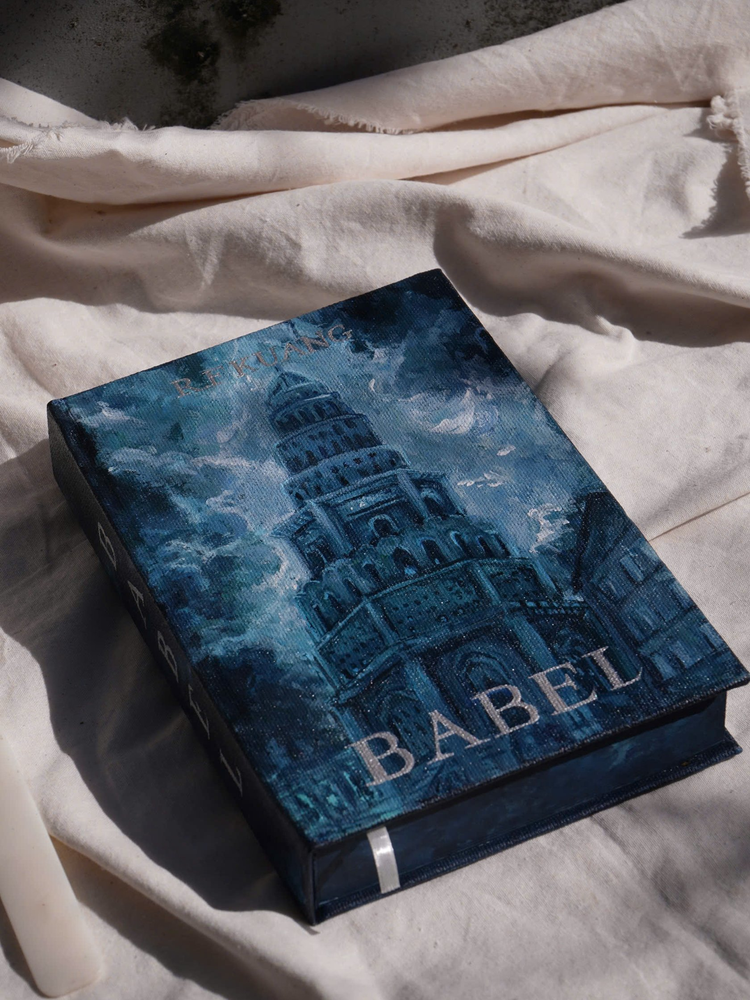

Khi một cuốn sách có thêm một diện mạo của riêng mình
Chauchaubook đưa cảm nhận về câu chuyện lên bìa sách bằng nét vẽ thủ công—để mỗi cuốn sách quen thuộc trở thành một tác phẩm mang dấu ấn riêng.

Từ tình yêu sách và hội họa
Chauchaubook là tên gọi gắn với Nguyễn Minh Châu—người tìm đến việc vẽ và làm sách từ mong muốn cá nhân hóa những cuốn sách mình yêu thích.
Trên nền canvas, màu acrylic và từng nét cọ, bìa sách không chỉ được thay một lớp áo mới. Hình ảnh, màu sắc và chi tiết đều hướng về thế giới bên trong cuốn sách, để bản sách trở nên gần gũi và duy nhất với người sở hữu.
Một hành trình được làm bằng tay
Mỗi cuốn sách có một tinh thần khác nhau, vì thế mỗi thiết kế cũng bắt đầu từ một cuộc tìm kiếm mới.
-
01
Cảm nhận tác phẩm
Tìm những hình ảnh, không khí và chi tiết có thể đại diện cho thế giới của cuốn sách.
-
02
Phát triển ý tưởng
Chọn bố cục, bảng màu và cách hình ảnh chuyển tiếp giữa bìa trước, gáy và bìa sau.
-
03
Chuẩn bị bề mặt
Xử lý bìa và chất liệu để sẵn sàng cho quá trình thể hiện hoàn toàn thủ công.
-
04
Vẽ và hoàn thiện
Từng lớp màu và chi tiết được xây dựng bằng tay, sau đó kiểm tra để hoàn thiện tác phẩm.
Những thế giới trên bìa sách
Câu chuyện được kể tiếp
Từ cá nhân hóa những cuốn sách mình yêu thích đến hành trình học phục chế để gìn giữ ký ức trong những trang sách cũ.
Mỗi bìa sách là một câu chuyện được kể thêm một lần nữa.
Vào bộ sưu tập